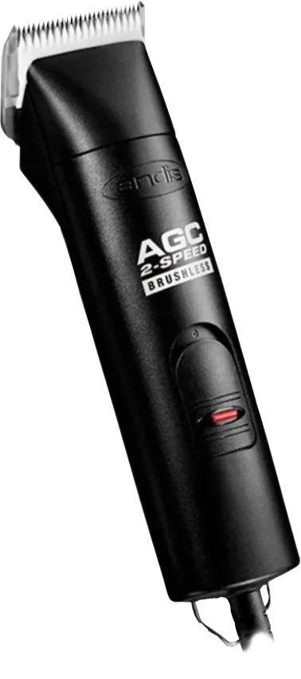

X

AGC2 Super 2-Speed
R$ 1.500,00 - R$ 2.000,00
Velocidade: 2 velocidades (3300 e 4000 SPM)
Potência: Motor rotativo poderoso e silencioso
Lâminas: Compatível com lâminas removíveis de mesmo encaixe
Material: Corpo resistente em polímero
Adicional: Refrigeração automática, operação silenciosa, ideal para tosas contínuas e profissionais